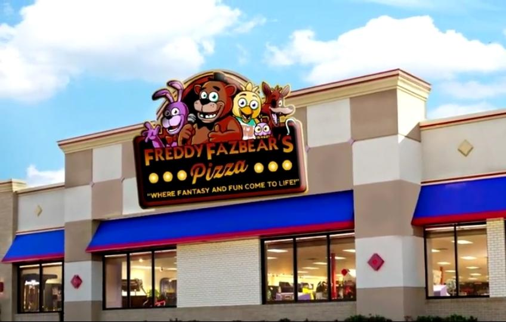

★ Nossa História ★

O começo de tudo
Em 1983, a Freddy Fazbear's Pizza abriu suas portas pela primeira vez. Combinando pizza, música e entretenimento familiar, a pizzaria rapidamente se tornou um dos restaurantes mais populares da região.
Linha do Tempo
1983
Primeira inauguração da Freddy Fazbear's Pizza.
1987
Expansão dos salões e chegada dos novos personagens animatrônicos.
1990
A empresa inicia novos projetos de entretenimento infantil.
2003
Novo website oficial lançado para visitantes e clientes.
Arquivo da Empresa

Nossos arquivos preservam momentos importantes da história da Freddy Fazbear Entertainment.
FILE STATUS: PUBLIC ACCESS
Documento encontrado
"Todos os equipamentos devem ser verificados antes do fechamento."
- Departamento Técnico